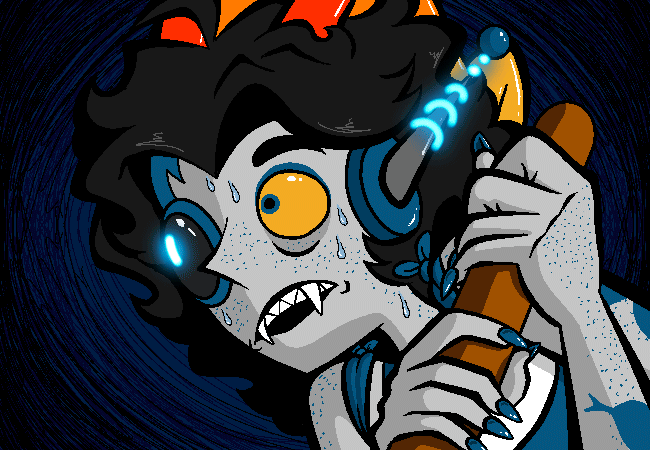

God, you would give your left eye to take a swig of that heavenly, brewed sopor juice. You've gone too
long with out
it
as it's been months since your last
drink!
Protus made it clear he would fillet you faster than a fish if you touch his
grog.
The Empire banned all forms of alcohol and recreational soporific use ever since The
Summoner's
uprising was squashed almost 10 sweeps ago.
Most fleet personnel smuggle it in from pirates and
galactic black markets.
Chever: Do what any pirate does when disgruntled, get piss-faced drunk.

> ==>